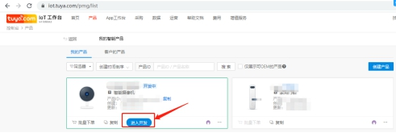
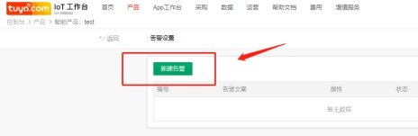
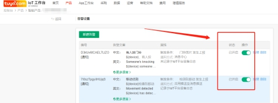
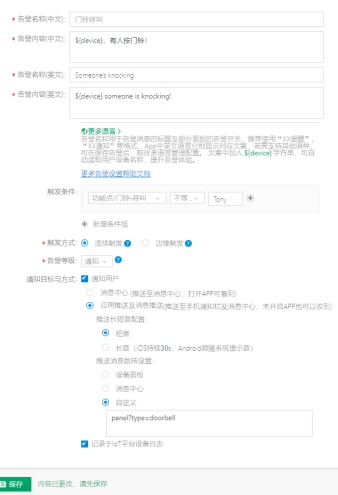
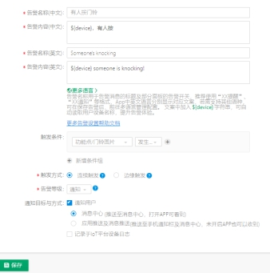
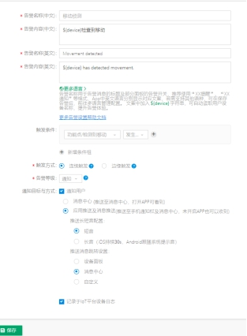

IOT告警配置
- 告警：
IoT平台配置告警位置：https://iot.tuya.com/pmg/list
在控制台-产品目录下，选中需要配置告警的产品（见下图）

进入【告警设置】页面后，点击【新建告警】，配置产品需要告警信息

在告警信息配置完成后，需要提供PID给到项目经理，通知其审核告警信息。在告警信息审核完成后，需要重新进入【告警设置】界面打开告警，之后APP清楚缓存测试。

- 移动侦测告警：
告警名称(中文)：移动侦测
告警内容(中文)：${device}检查到移动
告警名称(英文)：Movement detected
告警内容(英文)：${device} has detected movement.
触发条件：功能点/检测到移动-发生上报
触发方式：连续触发
告警等级：通知
通知目标与方式： ●通知用户
●应用推送及消息推送
推送长短音配置：
●短音
推送消息跳转设置：
●消息中心
- 门铃呼叫告警：
告警名称(中文)：门铃呼叫
告警内容(中文)：${device}有人按门铃！
告警名称(英文)：Someone's knocking
告警内容(英文)：${device} someone is knocking!
触发条件：功能点/门铃呼叫-不等于-Tony
触发方式：连续触发
告警等级：通知
通知目标与方式：●通知用户
●应用推送及消息推送
推送长短音配置：
●短音
推送消息跳转设置：
●自定义：panel?type=doorbell

- 有人按门铃告警：
告警名称(中文)：有人按门铃
告警内容(中文)：${device}，有人按
告警名称(英文)：Someone's knocking
告警内容(英文)：${device} someone is knocking!
触发条件：功能点/门铃图片-发生上报
触发方式：连续触发
告警等级：通知
通知目标与方式：●通知用户
●消息中心

- 低电量告警：
告警名称(中文)：移动侦测
告警内容(中文)：${device}检查到移动
告警名称(英文)：Movement detected
告警内容(英文)：${device} has detected movement.
触发条件：功能点/检测到移动-发生上报
触发方式：连续触发
告警等级：通知
通知目标与方式：●通知用户
●应用推送及消息推送
推送长短音配置：
●短音
推送消息跳转设置：
●消息中心
